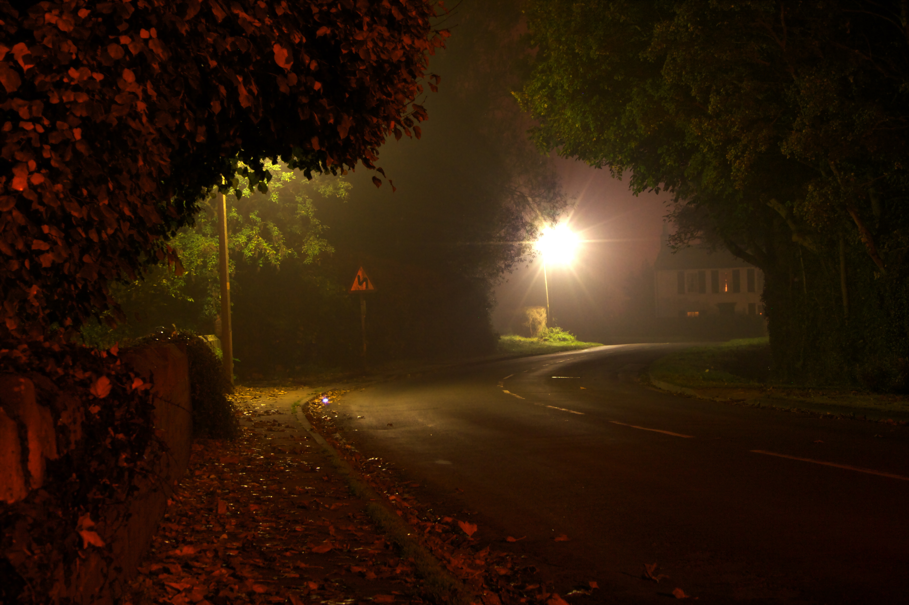

Policy Planning Violations
The application number is 2017/0736/REMM and it is going to Planning Committee on Wednesday the 5th of February at 2pm. Details here. Please lobby the committee - make sure you copy in all of them, and please turn up and show your objection.



Flood risk
The outline was granted in 2015. Since then the Flood Zone has changed from Flood Zone 1, to Flood Zone 2, making flooding more likely in this area. Selby have insisted that they don't need to re-assess the Flood Risk.